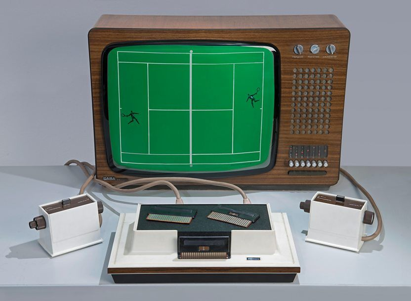
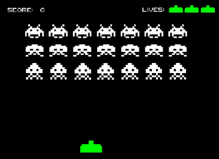
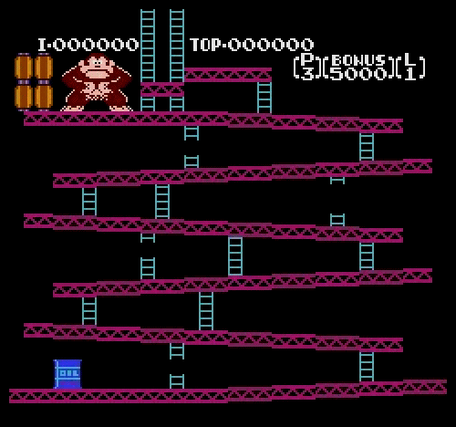
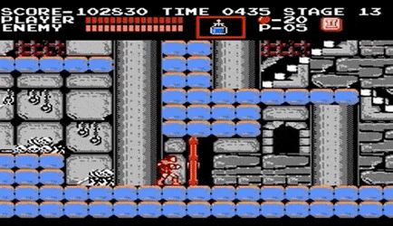

Introducción
Les retro games (ou jeux rétro) désignent les jeux vidéo anciens qui appartiennent à des générations de consoles, d'ordinateurs ou de bornes d'arcade précédentes. Ils sont appréciés pour leur nostalgie, leur style visuel pixelisé, et leur gameplay souvent simple mais captivant.
¿Conoces el primer videojuego de la historia? A día de hoy, los videojuegos conviven con nosotros en diferentes plataformas y géneros (móvil, consolas, ordenadores…). Estamos muy acostumbrados a verlos, pero no siempre fue así. Si quieres conocer la historia de los videojuegos clásicos, los retro games, sigue leyendo 👇👇👇
El origen de la historia de los videojuegos
El primer videojuego de la historia engloba un gran debate, depende de lo que consideremos videojuego. Pero, si indagamos un poco, fue Josef Kates, ingeniero canadiense, el que creó en 1950 ‘Bertie the Brain’, un enorme ordenador con válvulas de vacío que ejecutaba el juego del tres en raya.
Quizá también te suenen nombres como ‘Nimrod’ y ‘OXO’, pero ninguno de ellos puede considerarse un videojuego como los que conocemos hoy en día, sin gráficos animados, sin interactividad…
Unos años más tarde, William Higinbotham, uno de los físicos detrás de la primera bomba atómica, creó en 1958 un juego electrónico a modo de entretenimiento para los visitantes de una exposición sobre las innovaciones del laboratorio donde trabajaba. Creó, así, el ‘Tennis for Two’, una recreación de un partido de tenis que podía ser controlado por dos jugadores.
2. Retro games: Space Invaders, Pacman, Donkey Kong, Tetris y Mario Bros
Durante la década de los 70 y 80, la industria de los videojuegos tuvo algunos hitos famosos como en 1978 con el lanzamiento del juego de arcade Space Invaders. Este juego matamarcianos fue diseñado por el japonés Toshihiro Nishikado y su misión era destruir los extraterrestres invasores con un cañón de disparo, moviéndote sólo de derecha a izquierda.
Dos años más tarde nace el glorioso juego Pacman, fenómeno mundial en el que nuestro protagonista tiene que comer frutas y otros objetos antes de que le capturen los fantasmas. El nombre del juego proviene de la onomatopeya japonesa paku (パク) sonido que se produce al abrir y cerrar la boca.

Y en 1981 aparece Donkey Kong por Nintendo, un exitoso videojuego de plataformas que introdujo al personaje Mario en nuestras vidas. No fue hasta 1983 donde Mario apareció en su propio videojuego Mario Bros, junto con su hermano Luigi.
Nintendo puso patas arriba el mundo del videojuego lanzando sus dispositivos como la consola NES o la Game Boy (consolas de 8 bits), donde disfrutamos del maravilloso juego Tetris. Además, Nintendo creó una serie de importantes videojuegos que todavía existen, como Super Mario Bros, Legend of Zelda, Metroid…
